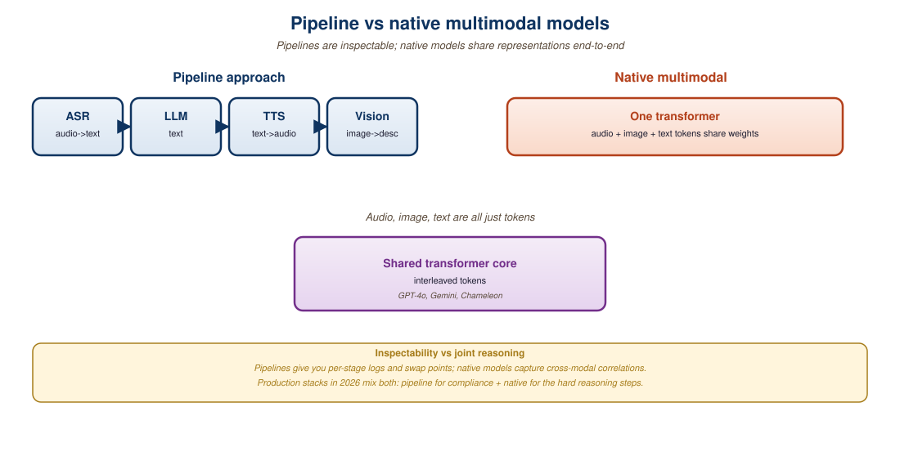

"A pipeline is a contract between specialists. An omni model is a generalist that signed every contract."
Internal architecture review note, frontier lab, 2024
Multimodal AI systems fall on a spectrum from "pipeline" to "native". A pipeline system chains independent specialists, a Whisper ASR feeding a text LLM whose output runs through a TTS model, while a native multimodal model handles all modalities inside a single neural network. The trade-offs are deep and not always obvious. Pipelines win on cost, latency-on-a-budget, debuggability, and the ability to use the strongest available specialist for each modality. Native models win on cross-modal reasoning, end-to-end latency for round trips, and capabilities that no individual specialist can produce. This section breaks down where each approach dominates, what 2024-2026 production deployments look like, and how to choose.
Prerequisites
This section assumes familiarity with the multimodal architectures from Section 31.1 and the transformer attention basics from Section 3.1. The audio specifics will pay back if you have read Chapter 20.

22.6.226.1 The Two Architectures
A pipeline system composes specialized models with explicit data exchange between them. The 2023-era voice assistant pipeline is the canonical example: Whisper-large transcribes audio to text, GPT-4 generates a reply, a TTS model (ElevenLabs, OpenVoice) synthesizes the spoken output. Each stage is independently swappable, retrainable, and observable. Latency adds up across stages, but each stage uses the best available model for its modality.
A native multimodal system accepts and produces multiple modalities inside one model. GPT-4o's voice mode, Gemini 2.0's native audio, and Llama-4-Omni's any-to-any generation are the production examples. The model has a single token vocabulary that spans text, audio frames, image patches, and (for some models) video frames. Cross-modal interactions happen via the same attention mechanism that handles text-to-text relationships.
The boundary is fuzzy. A "native" model may still depend on external tokenizers (e.g., the SoundStream or DAC codec that turns audio into discrete tokens) and explicit decoders (a separate diffusion model that paints images from text tokens). Conversely, a "pipeline" might be a single multimodal LLM that reasons across an image input plus a function call to a specialist tool. The right question is not pipeline or native, but where do the modality boundaries fall and how leaky are they.
22.6.226.2 Where Pipelines Win
Pipelines remain the dominant production architecture in 2026 for several reasons:
- Specialist quality: a dedicated ASR like Whisper-Large-v3 has lower WER than any general multimodal LLM's audio understanding. A dedicated diffusion model like Flux 1.1 produces better images than any LLM's image-generation head. The pipeline can use both.
- Cost: running Whisper plus GPT-4o-mini plus ElevenLabs typically costs less than running GPT-4o Realtime end-to-end, especially for batch workloads.
- Debuggability: when output is wrong, you can inspect the intermediate transcription and the LLM response separately. Native models give you only the final output.
- Latency budgeting: each stage's latency is independent and predictable. Adding a fallback or a retry to one stage does not affect the others.
- Compliance: regulated industries often require explicit data lineage (recorded ASR transcript, logged LLM prompt). Pipelines provide this natively.
For 90% of production multimodal workloads, the optimal stack is still a pipeline. The reason is that multimodal LLM training data is bottlenecked, English ASR has 5+ years of head start, and the integration cost of "best ASR + best LLM + best TTS" is low. Native models are catching up at the frontier, but on a Pareto curve of cost, latency, and quality across all three axes, pipelines still trace the upper envelope.
22.6.226.3 Where Native Multimodal Wins
Native models win when the task requires cross-modal reasoning that cannot be reduced to a clean intermediate representation:
- Tone and emotion: a voice agent that should pick up on a sigh or sarcasm cannot recover that from a pure text transcript. GPT-4o's audio model retains paralinguistic cues that Whisper strips.
- Tight latency budgets: a pipeline's end-to-end latency is the sum of stages' latencies plus serialization. A native model can begin streaming audio output before the user's input ends. Section 40.2 covers this in depth.
- Joint generation: producing a tightly synchronized video + audio clip (lip-synced) is hard with separate models; a native any-to-any model handles it within a single sample.
- Few-shot capability transfer: a native multimodal model can be prompted with an image and asked to reason about it in ways no fixed pipeline supports. The flexibility comes from in-context learning generalizing across modalities.
| Capability | Pipeline | Native Multimodal | Why |
|---|---|---|---|
| ASR accuracy | Better | Comparable | Whisper-v3 has dedicated training |
| TTS naturalness | Better | Comparable | ElevenLabs has dedicated training |
| Image generation quality | Better | Catching up | Flux/SD3 have dedicated training |
| Cost per request | Lower | Higher | Specialists are cheaper |
| Tone, sarcasm, emotion | Cannot | Better | Paralinguistic cues are lost in ASR |
| Time-to-first-audio-token | Higher | Lower | Native can start speaking before ASR finishes |
| Joint video + audio generation | Hard | Native | Tight cross-modal coupling |
| Cross-modal reasoning | Limited | Better | Shared latent representation |
| Debuggability | High | Low | Pipeline has inspectable interfaces |
22.6.226.4 The Hybrid Pattern
By 2026, the production architecture for most multimodal products is a hybrid:
- A native multimodal LLM (GPT-4o, Gemini 2.0, Llama-4-Omni) handles the cross-modal reasoning core.
- Specialist models handle the modality boundaries that need maximum quality (Whisper for offline transcription, ElevenLabs for high-fidelity TTS, Flux for image generation).
- A routing layer chooses between native end-to-end and specialist-based pipelines based on the request shape.
# A hybrid voice-agent dispatcher. Live conversation uses GPT-4o
# realtime for latency; batch transcription uses Whisper for accuracy.
from typing import Literal
def dispatch_voice(
payload,
mode: Literal["live", "batch", "transcribe_only"],
):
if mode == "live":
# Tight latency budget: use native end-to-end audio LLM.
# Trades some ASR accuracy for ~200ms time-to-first-token.
return openai_realtime.stream(payload)
elif mode == "batch":
# Accuracy and cost matter more than latency.
# Pipeline: Whisper -> GPT-4o-mini -> ElevenLabs.
transcript = whisper.transcribe(payload.audio)
reply = llm.chat(payload.system, transcript)
return elevenlabs.tts(reply, voice=payload.voice_id)
elif mode == "transcribe_only":
return whisper.transcribe(payload.audio)
else:
raise ValueError(f"unknown mode {mode}")The most sophisticated 2026 stacks run the native model and the pipeline in parallel for the same request, then merge the results. The native model handles the conversational realtime path; the pipeline runs slightly behind to produce a higher-quality transcript and a higher-quality TTS reply that takes over once the realtime path finishes a thought. Users perceive the low-latency feel of the native path with the polish of the specialist pipeline.
22.6.226.5 Cost and Latency Models
Two numerical lenses help make the choice concrete. For a typical 10-second voice exchange (user speaks 5s, agent replies 5s):
- Pipeline cost (early 2026): ~\$0.001 (Whisper API) + ~\$0.0006 (GPT-4o-mini, 500 tokens in/out) + ~\$0.001 (ElevenLabs TTS, 500 chars) = ~\$0.0026 per exchange.
- Native cost: GPT-4o Realtime API at \$0.20/min audio in + \$0.40/min audio out is ~\$0.05 per exchange, 20x more expensive.
- Pipeline latency: 1.2s ASR + 0.6s LLM + 0.8s TTS = 2.6s end-to-end before audio starts.
- Native latency: ~0.3s to first audio token.
For batch use cases (call center transcription, podcast post-production), the 20x cost gap and the lack of latency pressure makes pipelines dominate. For consumer conversational products (voice modes in ChatGPT, Pi, character.ai), the perceived latency improvement justifies the cost.
22.6.226.6 Decision Framework
Use a native multimodal model if any of the following are true:
- Time-to-first-audio-token must be below 500ms in a conversational loop.
- The product needs to react to paralinguistic cues (sighs, sarcasm, urgency).
- You need tightly coupled cross-modal output (e.g., lip-synced video).
- The user experience would benefit from interruption handling (the model can pause and listen mid-sentence).
Use a pipeline if any of the following are true:
- The workload is batch (offline transcription, document processing).
- Cost per request is bounded tightly (more than 10x cheaper matters).
- Regulatory or audit requirements demand inspectable intermediate representations.
- You need the absolute best ASR or TTS quality and the additional latency is acceptable.
Use a hybrid if the workload mixes both, which is the case for most consumer voice products.
Pipelines are the default for cost, debuggability, and absolute modality quality. Native multimodal models are the default for low latency, paralinguistic understanding, and tightly coupled cross-modal output. The hybrid pattern, native at the core, specialists at the boundaries, is the production standard for late 2025 and 2026 multimodal AI. The choice should be driven by the time-to-first-token budget, the importance of cross-modal cues, and the cost target, not by hype around the latest omni model.
- For an offline podcast transcription product, which architecture wins, and what are the specialist choices?
- A voice assistant needs to detect when the user is asking a question versus venting. Why does a pure-pipeline architecture struggle here?
- Sketch a hybrid architecture for a customer-support voice agent that needs both fast responses and high-fidelity transcripts for the audit log.
- Estimate the cost crossover: at what volume per month does the 20x native-versus-pipeline cost gap force you off GPT-4o Realtime even for a conversational product?
What Comes Next
Section 22.7: Early Fusion vs Late Fusion drills into the architectural details inside a native multimodal model. Where exactly does cross-modal information get combined, and how does that placement affect capabilities?